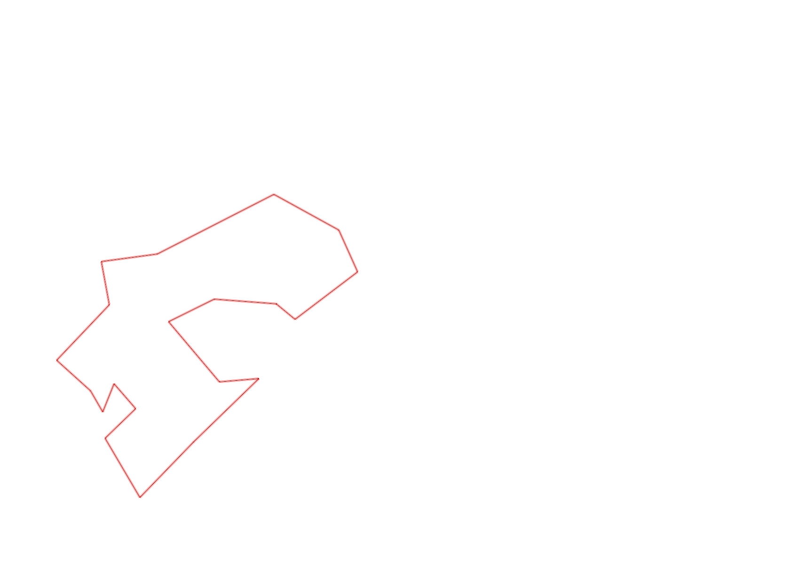
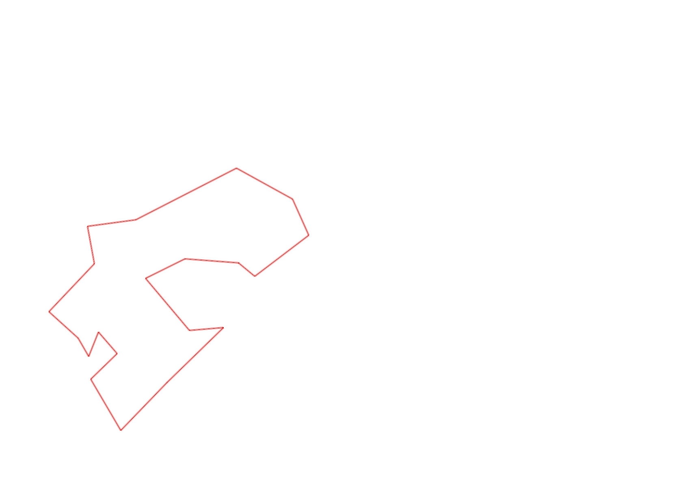

| Control |
Points |
Time Punched |
Distance |
Your Time |
Pace |
Place |
Fastest Time |
Median Time |
% Behind Fastest |
| 127 |
20 |
|
0.06 |
0:00:58 |
16:06 |
26 / 30 |
0:00:01 |
0:00:32 |
5700% |
| 92 |
90 |
|
0.21 |
0:03:49 |
18:10 |
3 / 6 |
0:02:15 |
0:04:11 |
69% |
| 57 |
50 |
|
0.12 |
0:05:55 |
49:18 |
6 / 9 |
0:01:59 |
0:05:37 |
198% |
| 107 |
100 |
|
0.2 |
0:05:47 |
28:55 |
21 / 21 |
0:00:00 |
0:02:52 |
-% |
| 63 |
60 |
|
0.35 |
0:04:50 |
13:48 |
17 / 18 |
0:01:59 |
0:02:42 |
143% |
| 32 |
30 |
|
0.15 |
0:01:22 |
09:06 |
24 / 27 |
0:00:36 |
0:00:56 |
127% |
| 44 |
40 |
|
0.12 |
0:02:11 |
18:11 |
19 / 29 |
0:00:52 |
0:01:49 |
151% |
| 53 |
50 |
|
0.2 |
0:02:45 |
13:45 |
19 / 26 |
0:01:31 |
0:02:15 |
81% |
| 69 |
60 |
|
0.12 |
0:01:58 |
16:23 |
24 / 29 |
0:00:45 |
0:01:18 |
162% |
| 71 |
70 |
|
0.06 |
0:01:39 |
27:30 |
17 / 25 |
0:00:48 |
0:01:13 |
106% |
| 54 |
50 |
|
0.08 |
0:00:59 |
12:17 |
27 / 33 |
0:00:27 |
0:00:45 |
118% |
| 41 |
40 |
|
0.09 |
0:02:19 |
25:44 |
13 / 13 |
0:01:01 |
0:01:43 |
127% |
| 40 |
40 |
|
0.11 |
0:01:46 |
16:03 |
22 / 24 |
0:00:45 |
0:01:00 |
135% |
| 77 |
70 |
|
0.18 |
0:04:08 |
22:57 |
19 / 21 |
0:01:35 |
0:02:21 |
161% |
| 59 |
50 |
|
0.21 |
0:04:06 |
19:31 |
17 / 18 |
0:02:00 |
0:02:47 |
105% |
| 38 |
30 |
|
0.24 |
0:05:49 |
24:14 |
2 / 2 |
0:02:28 |
0:04:08 |
135% |
| 60 |
60 |
|
0.11 |
0:01:18 |
11:49 |
16 / 19 |
0:00:42 |
0:00:57 |
85% |
| 130 |
30 |
|
0.21 |
0:02:11 |
10:23 |
4 / 5 |
0:01:22 |
0:02:06 |
59% |
| 126 |
20 |
|
0.14 |
0:01:51 |
13:12 |
11 / 12 |
0:01:09 |
0:01:26 |
60% |
| Finish |
0 |
|
0.17 |
0:01:32 |
09:01 |
7 / 9 |
0:00:31 |
0:00:57 |
196% |
Total Distance Covered: 3.13km
Points Scored: 960
Late Penalty: 0
Final Score: 960
Total Time: 0hours 57minutes 13seconds
Efficiency: 306.71 points/km
 
